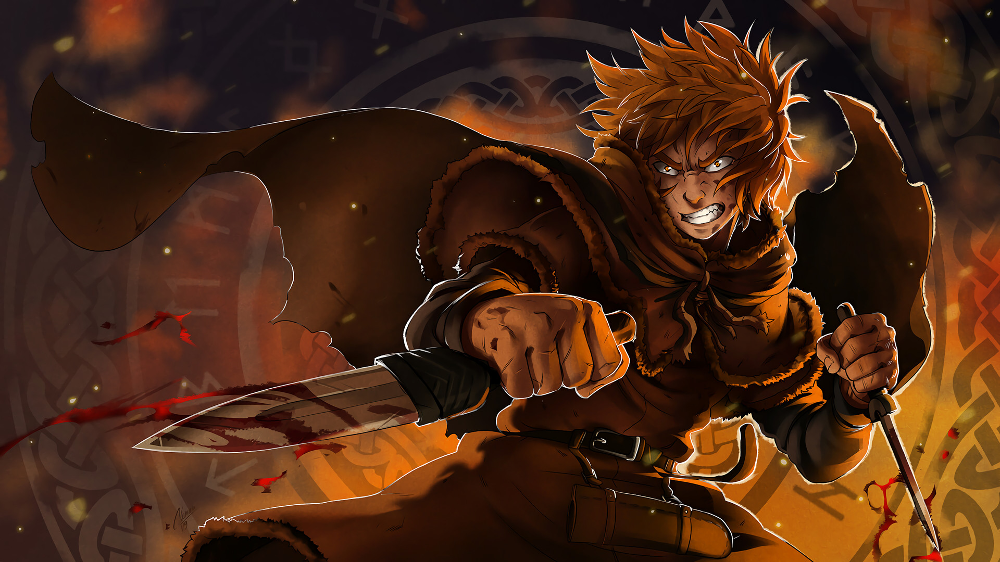

Vinland Saga
9 / 10
Young Thorfinn grew up listening to the stories of old sailors that had traveled the ocean and reached the place of legend, Vinland. It's said to be warm and fertile, a place where there would be no need for fighting—not at all like the frozen village in Iceland where he was born, and certainly not like his current life as a mercenary. War is his home now. Though his father once told him, "You have no enemies, nobody does. There is nobody who it's okay to hurt," as he grew, Thorfinn knew that nothing was further from the truth.
Studio : Wit Studio
Type : TV Series
Release date : July 8, 2019